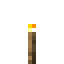
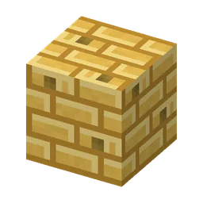
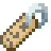

Een oude mijnschacht in de Gatenkaasgrotten, met een karretje vol buit
Kaasmijnschachtcommon, Gatenkaasgrottenvaak, Gatenkaasgrotten
An abandoned mine shaft with a chest minecart. Schacht 7: dicht!Een verlaten mijnschacht met een kistkarretje. Schacht 7: dicht!
The abandoned cheese mine shaftDe verlaten kaasmijnschacht
Small and fairly common in the Gatenkaasgrotten: two crossing corridors with old planks, props (some caved in), a rail with a chest minecart, a room with a chest and barrels, a caved-in shaft with a ladder and a sign: "SCHACHT 7 - DICHT! Te veel gaten, njeg!" Super compass: Ondergrond.
Klein en vaak te vinden in de Gatenkaasgrotten: twee kruisende gangen met oude planken, stutten (sommige ingezakt), een spoor met een kistkarretje, een kamer met een kist en tonnen, een ingestorte schacht met een ladder en een bord: "SCHACHT 7 - DICHT! Te veel gaten, njeg!" Superkompas: Ondergrond.
LootBuit
| ItemVoorwerp | CountAantal | ChanceKans |
|---|---|---|
| 3–10 | oftenvaak | |
| Spoor | 4–12 | sometimessoms |
 Fakkel | 4–12 | sometimessoms |
| 1–3 | sometimessoms | |
| 2–6 | sometimessoms | |
| 1–2 | sometimessoms | |
 Gatenkaasstenen | 4–12 | sometimessoms |
| 1 | rarelyzelden | |
 Naamkaartje | 1 | rarelyzelden |
| Iron pickaxe | 1 | rarelyzelden |